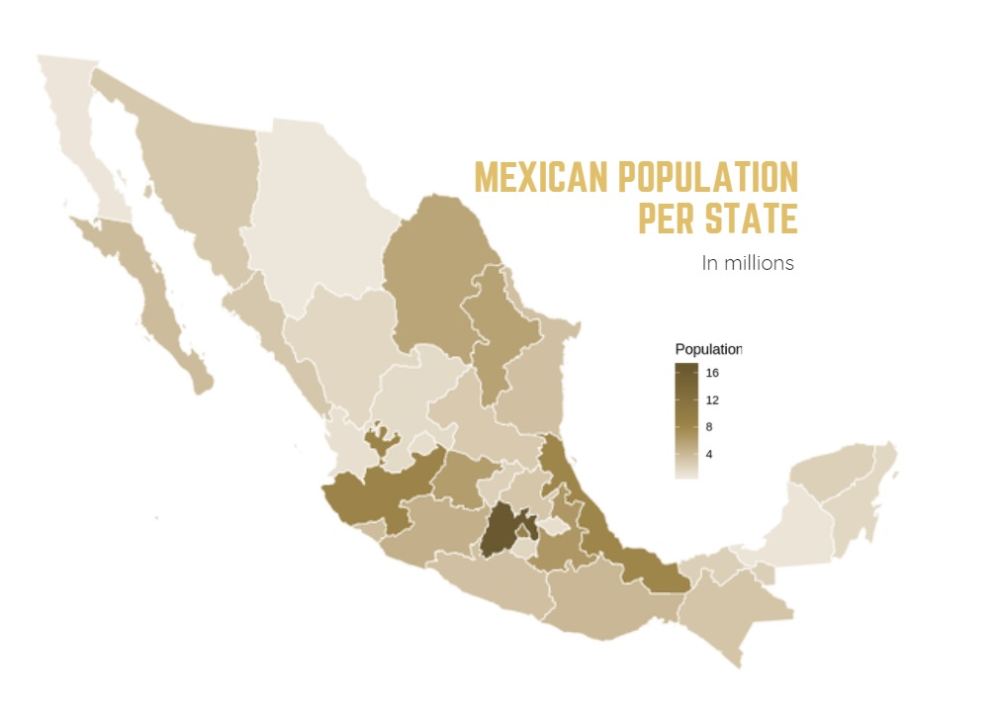
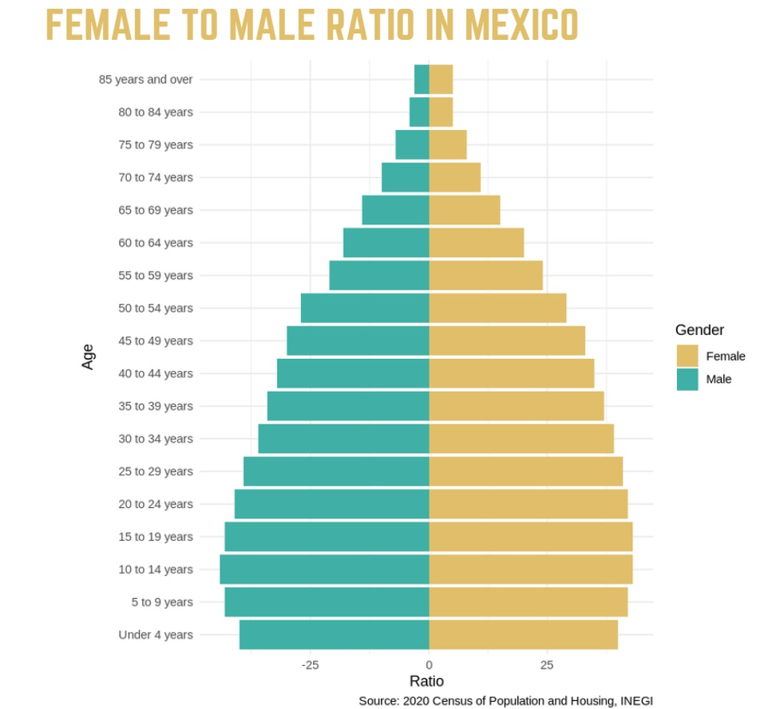
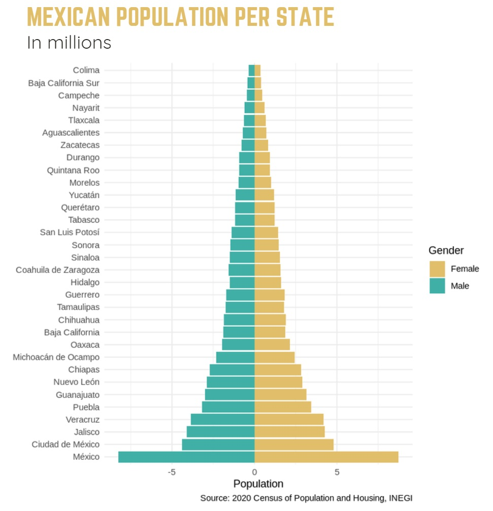
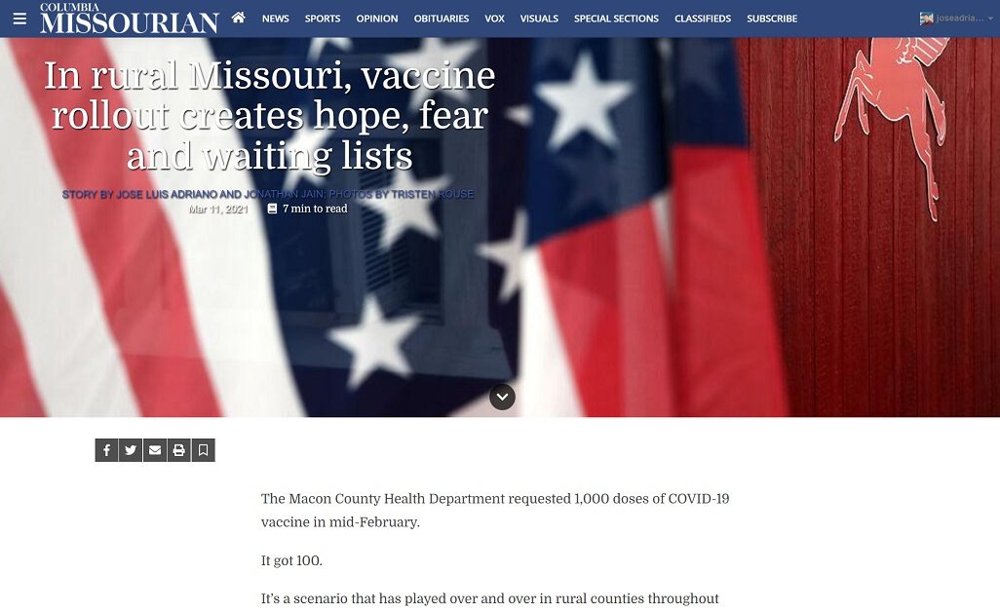
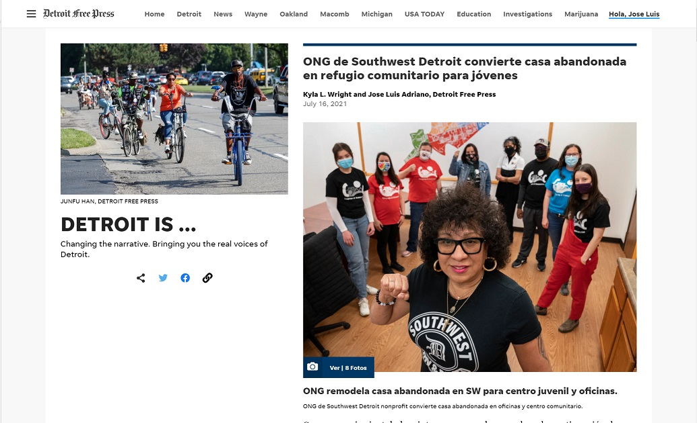

Using a dataset from INEGI, I plotted a cloropleth map showing Mexican population per state, using R libraries. |
 |
With census information from Mexico, I plotted a population pyramid graph with R code. |
 |
Using a dataset from INEGI, I plotted a cloropleth map showing Mexican population per state, using R libraries. |
 |
In rural Missouri, vaccine rollout creates hope, fear and waiting listsPublished on The Columbia Missourian, March 11, 2021 |
 |
A deeper look: Election night inside the Democratic Party headquartersPublished on The Columbia Missourian, November 4, 2020 | |
ONG de Southwest Detroit convierte casa abandonada en refugio comunitario para jóvenes (translation to Spanish)Published at the Detroit Free Press July 16, 2021 |  |